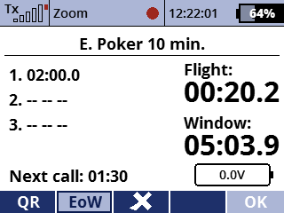

Il s'agit d'une application de gestion de scores comprenant toutes les epreuves officielles F3K ainsi que deux epreuves d'entraînement.
Elle propose ses propres minuteries implémentées en Lua et ne dépend pas des minuteries intégrées. Par conséquent, si vous voulez tester l'application, je vous conseille de d'abord créer une copie de votre modèle et de supprimer les minuteries que vous avez configurées afin d'éviter les reports de temps en double. Les minuteries de l'application peuvent également être ajoutées à l'écran principal en tant que télémétrie affichée.
Elle démarre et arrête la minuterie de vol lorsque vous activez le bouton de lancement. En mode normal, vous activez le lancement pour démarrer la minuterie, et de nouveau pour l'arrêter. En mode "QR", la minuterie redémarre immédiatement lorsque vous relâchez le bouton de lancement, vous permettant ainsi de réaliser des relancements rapides. Par défaut, la minuterie de vol se fige à la fin du temps de travail, vous permettant ainsi d'atterrir et de enregistrer le temps de vol.
Pour le Poker et l'epreuve d'entraînement "Relance rapide!", vous pouvez définir le temps de cible avec une molette.
Pour l'epreuve 1234, vous recevez des appels de temps supplémentaires avant chaque minute, pour vous aider à décider si vous voulez atterrir à la prochaine minute entière. Elle définit également des temps cibles "intelligents", en fonction des vols déjà enregistrés.
Il existe également une fonction qui annonce toutes les 10 secondes le temps de travail restant pour vous aider à décider quand lancer pendant les epreuves "derniers vols".
Les scores peuvent être modifiés, vous pouvez ainsi tenir une carte de score électronique avec les temps officiels lors des compétitions.
La vidéo suivante est en anglais.
Vous pouvez télécharger le code source depuis le référentiel GitHub SoarJETI.